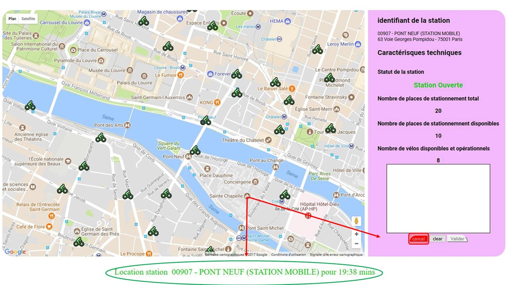

Bienvenue sur cette application.
Après quelques étapes vous pourrez-louer un vélo dans Paris pour 20mins. Commencez par cliquer un marker comme le montre l'illustration et passez à l'étape suivante
Déplacez-vous dans la carte et clickez ensuite sur le bouton louer pour passer à l'étape suivante
Signez dans le cadre et cliquez sur valider. Si vous souhaitez refaire votre signature cliquer sur effacer
Le message de confirmation de location comprenant le nom de la station s'affiche en bas et le compte-à-rebours de la durée de location commence. une seule location à la fois est possible. si vous voulez louer un autre vélo, attendez la fin du compte à rebours ou clikez sur annuler pour annuler et recommencez l'opération
Lorsque la touche annuler a été activée, un message confirme que la location à été annulée par l'utilisateur
Lorsque le temps est écoulé, un message vous informe de l'annulation de votre location. Vous pouvez soit quittez l'application soit réitérer une location.
Ce didacticiel touche à sa fin. Merci de l'avoir suivi. Vous savez maintenant comment louer un vélo. Nous souhaitons donc une bonne route.
Clickez sur l'un des markers dans la carte ci-contre